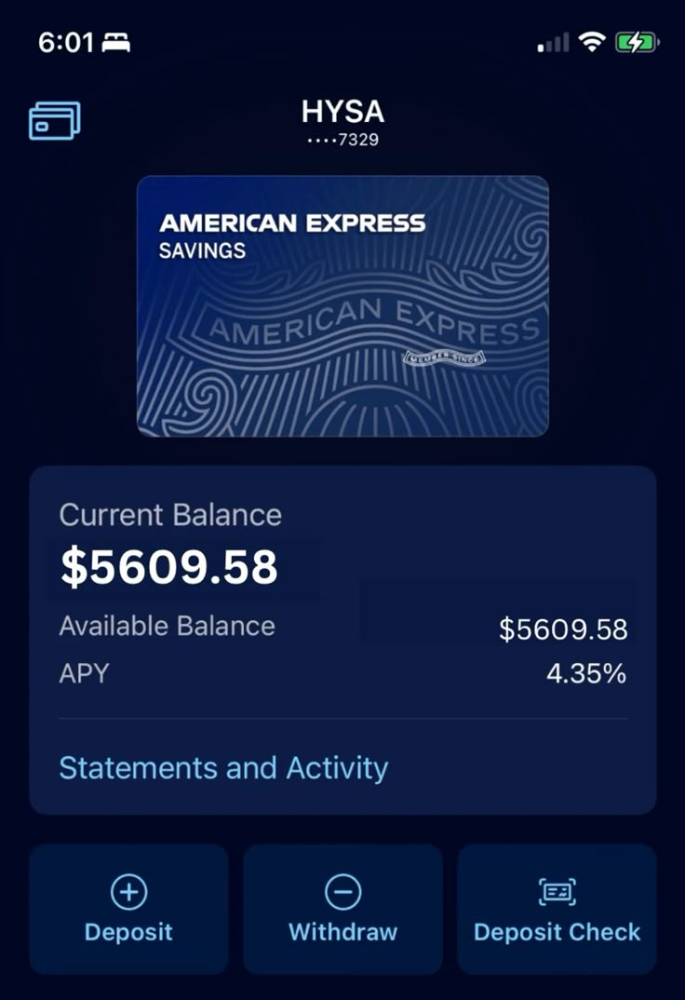

High-yield savings accounts
Is your cash working hard enough? Compare APY snapshots, minimum deposits, estimated earnings, and account tradeoffs in one calm view.

Rates shown are May 22, 2026 snapshots from your provided research and should be verified.
Best and popular HYSA picks
LifeScore starts with Marcus, then compares Amex, Capital One 360, SoFi, and Barclays. APYs and bonuses are snapshots to verify.
Turn the shortlist into a savings setup.
Ask a focused HYSA question and Score will route the answer around emergency cash, taxes, and provider fit.
Rates move. A 4.00% APY today can become lower later, so verify the current rate, fees, and conditions before opening an account.
HYSA advantages
- Usually higher rates than traditional savings accounts.
- Good fit for emergency funds and near-term savings goals.
- Many accounts have low or no monthly fees.
- Cash remains more accessible than in many CDs.
HYSA tradeoffs
- Rates can change with economic conditions.
- Online accounts may have limited branch access.
- Interest is generally taxable income.
- Long-term upside may be lower than diversified investments.
Common HYSA questions
A good APY is usually above 3% right now. Still compare fees, minimums, transfer speed, and whether the bank keeps rates competitive over time.
Yes. Many HYSAs can be opened online after identity verification, funding-account setup, and basic approval checks.
Many bank HYSAs are FDIC insured and many credit union savings accounts are NCUA insured, up to legal limits. Always verify coverage with the provider before depositing.